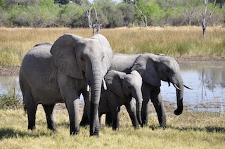

Depuis le lancement de notre opération "STOP maltraitance !" après le déconfinement, nos enquêteurs sont partis à la recherche d'animaux maltraités, avec de nombreux moyens. C'est avec un drône qu'ils ont trouvés une décharge à toit ouvert remplis d'animaux en grande détresse. Grâce à eux, nous avons pu faire un sauvetage d'un total de 91 chiens, chats, lapins, furets et poules ! Nous sommes très fiers de ce travail et de voir que notre association prend de l'ampleur ! Voici notre association représentée sur Youtube par une superbe vidéo. Bon visionnage ! 😄
Vous aussi, devenez enquêteur !
C'est en Inde, près du parc national de kaziranga, qu'une seule autoroute menace toute la faune sauvage. Le centre pour la réhabilitation et la conservation des espèces sauvages d’ifaw-wti protège les animaux du parc national de kaziranga des dangers et des perturbations causés par l’homme. En effet, à cause de l'autoroute 37 qui traverse le parc, les animaux sont contraints de traverser cette route et d’esquiver les voitures et les camions qui l’empruntent. Nombre d’entre eux y laissent leur vie. Dans la cohue, plus nombreux encore sont ceux qui sont séparés de leur famille ou de leur troupeau. Ce centre est le seul à secourir, élever et réhabiliter des animaux tels que le rhinocéros unicorne et l’éléphant d’Asie. Nous sommes fières d'envoyer des fonds pour mettre fin à cette tendance meurtrière et aider ce centre.
Notre équipe a pour projet final le rachat d'un terrain en France au Massif du Beaufortain (Alpes) d'environ 1647 hectares entre 820 et 1539m d’altitude afin de créer notre propre réserve naturelle : la Réserve Naturelle WCA. La réinsertion dans leurs milieu naturelle d'espèces menacées ou d'animaux victimes des ravages de l'homme est notre plus grande motivation. Pour voir ce projet devenir réalité, nous aurons besoin d'un budget que nous essayerons d'atteindre en organisant des évènements, des collectes grâce à notre site internet et nos différents membres déployés partout en France. Nous sommes en partenariat avec l'ASPAS qui s'engage à nous aider dans la création de la réserve ainsi que pour la protection de celle-ci. Ce projet est plus qu'un rêve, il est l'avenir des animaux sauvages donc si vous aussi vous souhaitez y contribuer : N'hésitez pas !!
En choisissant l'adoption dans un refuge, vous donnez une seconde vie à un animal qui a besoin de vous.
Sans vous, nous ne pouvons rien faire. Le moindre don peut nous aider à protéger les animaux. N’hésitez plus.
Contre la maltraitance, luttons ensemble ! Des petits pas pour l'homme, mais des énormes pas pour les animaux.